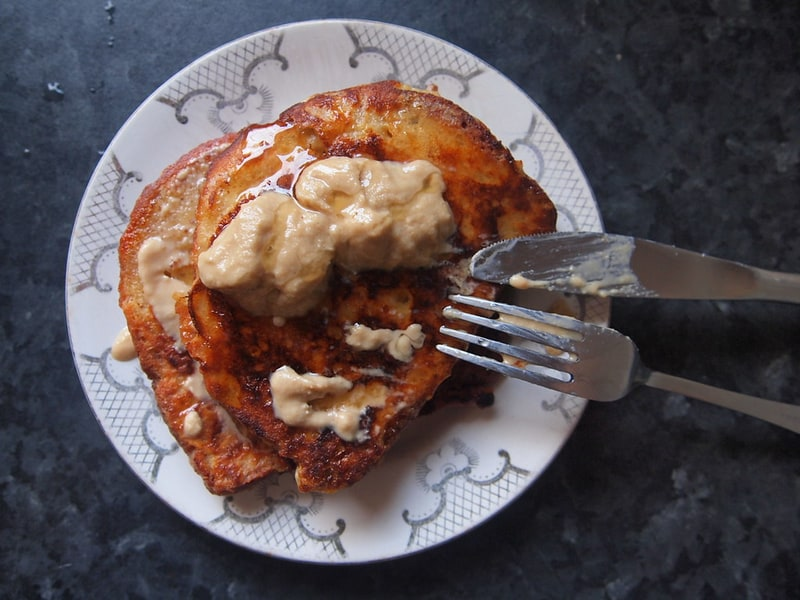

Polskie obiadki
Rolada wieprzowa
Rolada wieprzowa: 20 g białka, 210 kcal, 3 g węglowodanów i 13 g tłuszczu na 100 g. Kategoria: Polskie obiadki.
Kalorie210 kcalna 100 g
Białko / proteiny20 g
Węglowodany3 g
Tłuszcz13 g
Cena (szac.)~1,53 złza 100 g
Ceny zaktualizowano: maj 2026 (szacunek — ceny w popularnych supermarketach)
Porcja: porcja (150g)
| Kalorie | 315 kcal |
|---|---|
| Białko | 30 g |
| Węglowodany | 4.5 g |
| Tłuszcz | 19.5 g |
| Cena (szac.) | ~2,29 zł |
Szczegółowe składniki odżywcze na 100 g
| Wartość energetyczna (kalorie) | 210 kcal |
|---|---|
| Białko (proteiny) | 20 g |
| Węglowodany | 3 g |
| Tłuszcz | 13 g |
| Tłuszcze nasycone | 5 g |
| Tłuszcze nienasycone | 8 g |
| Witaminy i minerały | Żelazo, Tiamina (B1), Potas |
| Współczynnik kcal / 1 g białka | 10.5 |
| Cena produktu (szac. za 100 g) | ~1,53 zł |
| Cena za 100 g białka (szac.) | ~7,63 zł |